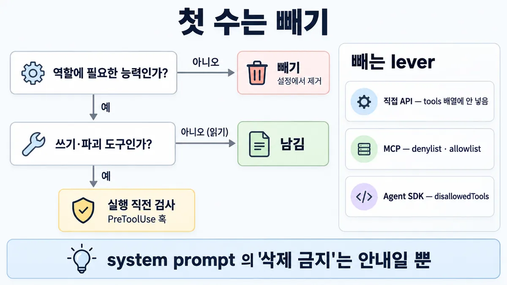
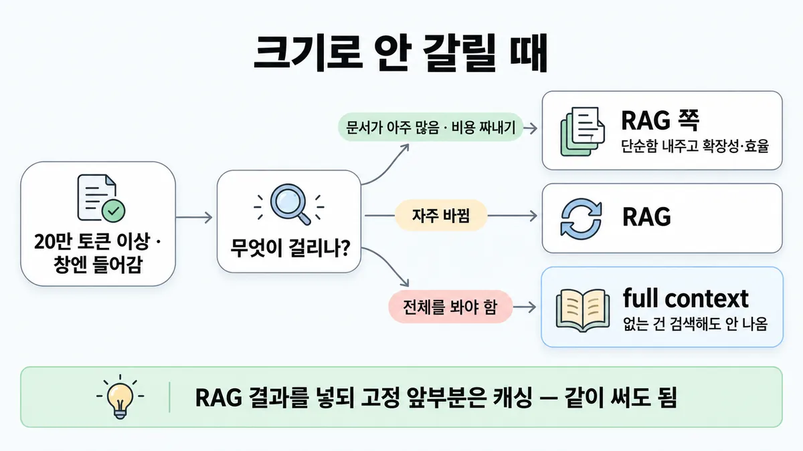
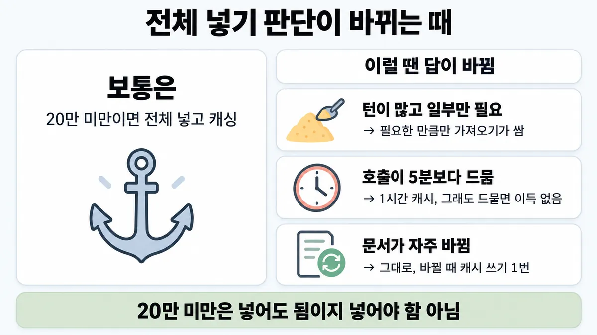

◆ RAG vs full context
표시가 없는 문장은 공식 문서에서 확인한 내용이에요. 다른 표시는 읽는 법
왜 배우나 — 시험이 요구하는 것
시험 목표 2.4 컨텍스트 창과 토큰 관리 · D2 모델·프롬프트 13%Optimize context windows and manage token usage
이 개념으로 푸는 판단 (할 수 있어야 하는 것)
- 2.4① 지식 문서를 통째로 넣을까, RAG 를 만들까? — 크기 기준으로 통째로+캐싱 vs RAG
- 3.8① 정책 모음이 12만 토큰이고 모든 상담에 재사용된다 — RAG 를 깔까, 통째로 넣을까? — 통째 컨텍스트 + 캐싱 vs RAG
- 6.4③ ADR 에 "100쪽 계약은 context rot 때문에 RAG" 라고 적었다 — 이 근거가 맞나? — ADR 근거를 공식 기준·평가 증거로 적기 (크기 기준부터 확인)
한눈에


ELI5
책 한 권을 통째로 들고 다닐지, 필요한 쪽만 복사해 갈지 고르는 거예요.
- 얇은 책이면 통째로 들고 다니는 게 제일 편해요.
- 너무 두꺼우면 가방에 안 들어가니 복사해 가야 해요.
- 그런데 하루에 수백 번 펼쳐야 하면, 들고 다니는 비용이 쌓여요.
- 이 쪽은 "언제 답이 바뀌나"를 모아 둔 곳이에요.
- 통째로 넣고 캐싱
- 창에 안 들어가면 RAG
개념 설명
원리
full context(문서 전체를 넣기)
- 모델이 문서 전부를 봄 → 검색(retrieval)이 빗나갈 일이 없음.
- 매번 전부 읽는 비용은 캐싱이 흡수함. 캐시 읽기 = 입력 단가 0.1배.
- 한계 1 : 창보다 크면 못 넣음.
- 한계 2 : 토큰이 늘수록 정확도·재현율이 떨어짐 (context rot). 컨텍스트는 한정 자원.
- 한계 3 : 캐싱해도 매 턴 문서 전체의 10% 만큼은 비용이 듦 (0.1배 × 전체).
RAG
- 미리 chunk 로 나눠 index(색인) → 질문마다 관련 chunk 만 넣음 → 작고 싸고 커져도 버팀.
- 한계 1 : 검색이 빗나가면 모델은 틀린 chunk 로 자신 있게 틀림. 문서 갱신 뒤 이상하면 검색·indexing 부터 의심 (공식 샘플 3).
- 한계 2 : chunk 만 봐선 맥락이 빠짐 → chunk 앞에 문맥 설명을 붙임 (Contextual Retrieval).
- 한계 3 : 전처리·검색 장치를 만들고 돌려야 함. 단순함을 포기하고 확장성을 얻는 trade-off(절충).
JIT 검색 (just in time — 필요할 때 가져오기)
- RAG 의 에이전트판. 가벼운 식별자(파일 경로·쿼리)만 들고 있다가 필요할 때 도구로 가져옴.
- 섞어 쓰기도 됨 : 자주 쓰는 건 미리 넣고, 나머지는 필요할 때.
핵심 질문 두 개
- 모델이 봐야 하는 게 문서 전부인가, 일부인가?
- 전부를 매번 읽는 비용(캐싱 뒤)이, 일부만 가져오는 비용보다 싼가?
규칙과 판단


갈림길
크기 먼저 [2.4①] [3.8①]
full context + 캐싱
RAG 없이 full context(문서 전체를 넣기)로 넣고 ■ 프롬프트 캐싱으로 빠르고 싸게
RAG
임베딩 + BM25 + chunk 앞 문맥 붙이기 + 리랭킹
다음 물음 — 무엇이 걸리나?
크기 밖의 조건 [2.4①] [6.4③]
RAG 쪽
RAG = 단순함을 포기하고 확장성·효율을 얻는 trade-off (Skilljar)
RAG
업계 일반 공식 글·Skilljar 강의 모두 이 조건 없음 · 20만 미만이면 full context 가 공식이 먼저 드는 답
full context
전체를 봐야 하는 일 → full context. chunk 검색은 안 맞음, 없는 건 검색(retrieval)해도 안 나옴 업계 일반
흐름
그림 속 이름·금액·시간·토큰 수는 예시예요. 공식 한도·동작은 카드 본문 값이 기준.
장면 글로 보기
칸 : 지식 → 캐시 → 검색 → 모델
질문 : 검색을 거쳐야 할까?
① full context + 캐싱 ✓
- 시작 : 지식 — 쪽지 : 제품 매뉴얼 300쪽 / ≈ 12만 토큰
- 넣기 : 지식 → 캐시 : full context 로 넣고 — 쪽지 : system: 매뉴얼 전문 / + cache_control
- 건너뜀 : 검색
- 읽기 : 캐시 → 모델 : 캐싱으로 빠르고 싸게 — 쪽지 : cache_read: 120000 / 질문: "X200 필터 주기?"
- 끝 : 20만 토큰(약 500쪽) 미만 → RAG 없이 full context 로
② 창에 안 들어감 → RAG ✓
- 시작 : 지식 — 쪽지 : 제품 매뉴얼 40종 · 2만 쪽 / 컨텍스트 창보다 큼
- 건너뜀 : 캐시
- 찾기 : 지식 → 검색 : 임베딩 + BM25 + 문맥 + 리랭킹 — 쪽지 : 검색어: "X200 필터 주기" / chunk 5개 뽑힘
- 넣기 : 검색 → 모델 : 뽑힌 chunk — 쪽지 : chunk #4812 / "X200 필터는 6개월마다…"
- 끝 : 컨텍스트 창에 안 들어갈 만큼 큼 → RAG
③ 빠진 조항 찾기 → 검색 ≠
- 시작 : 지식 — 쪽지 : 계약서 100쪽 / 질문: "빠진 필수 조항은?"
- 건너뜀 : 캐시
- 찾기 : 지식 → 검색 : chunk 검색 — 쪽지 : 검색어: "개인정보 파기" / 결과 0건
- 넣기 : 검색 → 모델 : 없는 건 검색해도 안 나옴 ≠ — 말 : “빠진 조항은 없어 보여요.”
- 끝 : 전체를 봐야 하는 일 → chunk 검색이 안 맞음
규칙 원문 갈림 기준 (갈림길로 그린 규칙)
갈림 기준
지식 크기가 먼저
- 20만 토큰(약 500쪽) 미만 → RAG 없이 full context 로 넣고 ■ 프롬프트 캐싱으로 빠르고 싸게
- 컨텍스트 창에 안 들어갈 만큼 큼 → RAG (임베딩 + BM25 + chunk 앞 문맥 붙이기 + 리랭킹)
- 20만 이상인데 창엔 들어감(1M 창) → 크기로는 안 갈림. 공식 글은 지식이 커지면 더 확장성 있는 방법이 필요하다고만 함 → 아래 조건으로 판단
- 문서가 아주 많거나 여러 개 · 비용·성능을 더 짜내야 함 → RAG 쪽. RAG = 단순함을 포기하고 확장성·효율을 얻는 trade-off (Skilljar)
- 자주 바뀌면 RAG 업계 일반 공식 글·Skilljar 강의 모두 이 조건 없음
- 전체를 봐야 하는 일('빠진 조항 찾기') → full context. chunk 검색은 안 맞음, 없는 건 검색해도 안 나옴 업계 일반
- RAG 결과를 넣되 고정 앞부분은 캐싱, 같이 써도 됨 업계 일반
쪽수로 나오면 환산 : 500쪽 ≈ 20만 → 300쪽 ≈ 12만 · 100쪽 계약 ≈ 4만 (환산은 계산값)
더 깊이 : 판단 규칙 · 상황 변수 (설명)
판단 규칙
| 조건 | 답 | 근거 |
|---|---|---|
| 지식이 20만 토큰(약 500쪽) 미만 | RAG 없이 full context + 캐싱 | contextual-retrieval "If your knowledge base is smaller than 200,000 tokens (about 500 pages of material), you can just include the entire knowledge base in the prompt" |
| 창에 안 들어갈 만큼 큼 | RAG | contextual-retrieval "For larger knowledge bases that don't fit within the context window, RAG is the typical solution." |
| 아주 큰 문서 · 여러 문서 · 비용·성능을 더 짜내야 함 | RAG 쪽 | Skilljar 287763 "especially valuable when working with very large documents, multiple documents, or when you need to optimize for cost and performance" |
| full context 로 넣기로 했으면 | 긴 문서는 맨 위, 질문·지시는 그 아래. 관련 부분을 먼저 인용하게 함 | prompting-best-practices (20k+ 토큰 입력) |
| 에이전트가 긴 작업 중 필요한 것만 가져와야 함 | JIT 검색 또는 섞어 쓰기 | effective-context-engineering |
| 문서 갱신 뒤 자신 있게 틀림, 모델·지연(latency) 그대로 | 검색·indexing 단계부터 조사 | 가이드 샘플 3 정답 B |
상황 변수
| 변수 | 값 | 답 쪽 | 등급 | 근거 |
|---|---|---|---|---|
| 지식 크기 | 20만 미만 | full context + 캐싱 | 판단 규칙 1 | |
| 지식 크기 | 창(모델에 따라 200k 또는 1M) 초과 | RAG | 판단 규칙 2 · context-windows | |
| 문서 개수 | 여러 개 · 계속 늘어남 | RAG 쪽 | Skilljar 287763 | |
| 한 턴에 필요한 양 | 문서의 10% 미만 + 호출이 아주 많음 | RAG·JIT 검색이 쌈 | 계산 | 뒤집히는 때 1 |
| 호출 간격 | 캐시 수명(5분)보다 긺 | full context 가 매번 캐시 쓰기 비용(1.25배)을 냄 → 크게 비쌈 | 계산 | 뒤집히는 때 2 |
| 과제 모양 | 전체를 대조 · 빠진 것 찾기 · 어디 있을지 모르는 변형 찾기 | full context | 업계 일반 | 없는 건 검색해도 안 나옴 |
| 과제 모양 | 한두 구절만 찾아 답함 | RAG 쪽 | 업계 일반 | — |
| 갱신 빈도 | 자주 바뀜 | 둘 다 가능. full context 는 바뀔 때마다 캐시 쓰기 1번, RAG 는 re-index | 계산 | 뒤집히는 때 3 |
| 쪽수로 주어짐 | 500쪽 | 약 20만 (옛 토크나이저 기준) | 판단 규칙 1 — 새 토크나이저는 흔들림, 미해결 2 |
연습 문제
고객지원 Agent 가 참고할 지식은 제품 매뉴얼 300쪽 한 벌300쪽이다. 한 팀원이 "긴 프롬프트는 context rot 이 있으니 벡터 DB 로 RAG 부터 깔자"고 한다. 매뉴얼을 어떻게 넣을까?
시험 대비
함정
- "full context 로 넣는 보기는 항상 오답, context rot 이니 무조건 RAG" → 크기 먼저. 긴 프롬프트가 덜 효과적인 건 맞지만(Skilljar) 20만 미만이면 full context 가 공식이 먼저 드는 답
- "300쪽 = 100만 토큰이라 RAG 필수" → 환산 틀림
- "검색 인프라가 있어야 엔터프라이즈답다" → 과설계 업계 일반
- '빠진 조항 찾기'처럼 전체를 봐야 하는 일 → chunk 검색이 안 맞음, 없는 건 검색해도 안 나옴 업계 일반
- RAG 약점 : 뽑힌 chunk 에 필요한 맥락이 없을 수 있음 → 그래서 chunk 앞에 문맥 붙이기(Contextual Retrieval)
신호
"If your knowledge base is smaller than 200,000 tokens (about 500 pages of material), you can just include the entire knowledge base in the prompt that you give the model, with no need for RAG or similar methods."
"For larger knowledge bases that don't fit within the context window, RAG is the typical solution."
"Sometimes the simplest solution is the best."
"RAG trades simplicity for scalability and efficiency." (Skilljar)


더 깊이 : 뒤집히는 때 · 오답 재료 (설명)
뒤집히는 때
1. 20만 미만인데 JIT 검색이 더 싼 때
- 조건 : 문서가 20만 미만이라 full context 로 들어가지만, 턴(호출)이 아주 많고 한 턴에 필요한 건 문서의 일부뿐.
- 계산 : 문서 D 토큰을 full context 로 두면 캐시 적중 턴마다 D × 0.1 만큼 입력 단가를 냄. JIT 검색은 그 턴에 가져온 N 토큰만 냄(캐시 안 됨). 그래서 N < 0.1 × D 면 JIT 검색이 쌈.
- 예 : D = 16만(약 400쪽) · Sonnet 5 입력 $2, 캐시 읽기 $0.20 (백만 토큰당) → full context 적중 턴 = 16만 × $0.20 = $0.032. 점진 N = 4천 → 4천 × $2 = $0.008. 손익 N = 1만 6천.
- 전제 : 캐시가 매 턴 적중 · 검색 장치 비용·지연은 뺌 · 대화 기록 증가는 양쪽이 같다고 봄 · 가격 = 2026-09-28 조회값.
- 등급 : 계산. 공식은 "20만 미만이면 full context 로 넣어도 된다(can)"라고 했지 "넣어야 한다"고 하지 않음. 컨텍스트는 한정 자원이라 매 턴 작게 두라는 공식 원칙(context rot)도 같은 방향 → 지문이 "비용이 제약 + 턴이 많음 + 필요한 건 일부"를 모두 말하면 JIT 검색 쪽이 설 자리가 있음.
- 근거 : pricing(0.1배) · prompt-caching 표(Sonnet 5 가격) · context-windows(context rot) · effective-context-engineering(한정 자원, 가장 작은 고신호 집합)
- 시험 뒤 변경 Opus 5.5 는 읽기 0.05배(2026-09-22) → 손익 N 이 문서의 5% 로 내려감.
2. 호출 간격이 캐시 수명보다 긴 때
- 조건 : 같은 문서를 쓰지만 호출이 드문드문(5분 넘게 간격).
- 계산 : 매 호출이 캐시 쓰기 1.25배 → 16만 × $2.50 = $0.40 / 호출. 적중 때($0.032)의 12.5배.
- 처방 순서 : 1시간 캐시(쓰기 2배, 읽기 2번부터 이득) → 그래도 드물면 캐싱 이득 없음 → full context 의 비용은 매번 전체 입력 × 입력 단가.
- 등급 : 계산 (수명·배수는 확인)
- 근거 : prompt-caching(기본 5분) · pricing
3. 자주 바뀌니까 RAG? — 잘 안 뒤집힘
- 조건 : 문서가 하루 몇 번 바뀜.
- 계산 : full context 는 바뀔 때마다 캐시 쓰기 1번(1.25배)이면 다시 적중. 하루 몇 번이면 작은 비용. RAG 도 바뀔 때마다 re-index 가 필요함.
- 등급 : 계산. "자주 바뀌면 RAG" 는 공식 문장 없음(업계 일반). 갱신 빈도만으로는 답이 잘 안 바뀜 → 이 조건만 걸어 놓은 보기는 약함.
- 근거 : pricing · contextual-retrieval en 전문(이 조건 없음)
4. 창이 1M 인데 20만 기준은 그대로?
- 조건 : 2026 모델 다수가 1M 창이 기본(Opus·Sonnet 4.6 은 2026-03-13 부터).
- 판단 : 20만 기준 문장은 2024 글. 창이 커져서 "창에 들어감" 범위는 넓어졌지만, context rot 때문에 크게 넣을수록 정확도가 떨어진다는 것도 공식. 20만~1M 구간은 공식 문장 없음.
- 등급 : 미해결
- 근거 : context-windows · 릴리스 노트
오답 재료
| 오답 | 왜 끌리나 | 왜 틀리나 | 등급 | 근거 |
|---|---|---|---|---|
| "full context 로 넣는 보기는 항상 오답, context rot 이니 무조건 RAG" | context rot 은 공식도 인정 · 긴 프롬프트는 덜 효과적(Skilljar) | 20만 미만이면 full context 가 공식이 먼저 드는 선택. context rot 은 "크기 먼저 보라"는 말이지 "항상 RAG"가 아님 | contextual-retrieval · context-windows | |
| "300쪽이면 100만 토큰쯤이라 RAG 필수" | 쪽수 감이 없음 | 500쪽 ≈ 20만 → 300쪽 ≈ 12만 | 계산 | contextual-retrieval |
| "정책을 5천 토큰으로 요약·잘라서 넣기" | 비용이 바로 줄어 보임 | 필요한 내용을 잃음. 공식 샘플 2 의 A(잘라내기)와 같은 원리 | 가이드 샘플 2 해설 "Truncation (A) loses needed policy" | |
| "지식을 파인튜닝으로 넣기" | 한 번 학습하면 매번 안 보내도 될 것 같음 | 문서 지식 주입 수단으로 공식이 드는 건 full context·RAG. 파인튜닝은 이 판단의 보기로 약함 | 업계 일반 | — |
| "검색 개수(top-k)를 늘리면 빠진 걸 찾음" | 더 많이 가져오면 더 잘 찾을 것 같음 | 유사도 검색은 문구가 다른 변형을 못 찾음. 문서가 창에 들어가면 full context 가 답 | 업계 일반 | 판단 규칙 1 |
| "더 큰 창 모델로 바꾸면 해결" | 창이 크면 다 넣을 수 있음 | 창은 목표가 아니라 상한. 크게 넣을수록 context rot | context-windows (제3자 문항 유형 요약) | |
| "검색 인프라(벡터 DB)부터 깔아야 엔터프라이즈답다" | 규모 있어 보임 | 과설계. 공식은 "가장 단순한 것이 최선일 때가 있다" | contextual-retrieval "Sometimes the simplest solution is the best." | |
| "JIT 검색은 항상 full context 보다 쌈" | 적게 넣으니 쌀 것 같음 | 캐시 읽기 0.1배라 한 턴에 문서의 10% 넘게 가져오면 오히려 비쌈 | 계산 | 뒤집히는 때 1 (제3자 문항 유형 요약) |
참고
개념
출처
- 가이드 목표 2.4 공식 시험 가이드 v1.0
- 가이드 목표 3.8 공식 시험 가이드 v1.0
- Contextual Retrieval 글
- Skilljar API 287763
상태
- 업계 일반 5줄
미해결
- 20만~1M 구간 : 1M 창이 기본이 된 뒤 "full context 로 넣어도 되는 크기"가 커졌는지 공식 문장 없음 (뒤집히는 때 4). 공식 글은 20만 문장 다음에 "as your knowledge base grows, you'll need a more scalable solution"까지만 말함 — 카드엔 "크기로는 안 갈림 → 다른 조건으로" 로 적음.
- 쪽수 환산 : 500쪽 ≈ 20만은 2024 글 기준. 새 토크나이저는 같은 글을 약 30% 더 셈(Sonnet 5, 릴리스 노트) → 같은 500쪽이 약 26만일 수 있음. 시험 지문이 쪽수로만 주면 20만 기준으로 환산하는 게 안전(추론).
- JIT 검색 손익의 "검색 장치 비용·지연"은 공식 숫자가 없어 계산에서 뺐음.
- (이 카드 밖) 목록 2.4③ 이 인용한 "질문을 끝에 두면 최대 30% 향상" 문장이 지금 prompting-best-practices 문서엔 없음 — 2.4③ 을 카드로 만들 때 확인.